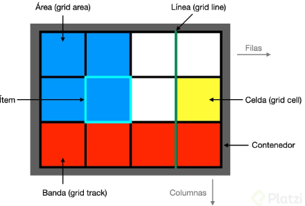
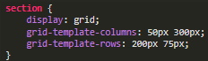
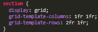

HTML adaptativo.
Erick Daniel Galaviz Saenz
Mat.238545
Bitacora 3: Grids

Grids
Grid CSS nace de la necesidad de colocar y distribuir los elementos a lo largo de una
página, y recoge las ventajas de ese sistema, añadiendo numerosas mejoras y características
que permiten crear rápidamente cuadrículas sencillas y potentes de forma prácticamente
instantánea.

Grid con filas y columnas
Se puede establecer un tamaño fijo para la cuadrícula. Para ello podemos hacer uso de las
propiedades CSS grid-template-columns y grid-template-rows, que sirven para indicar las
dimensiones de cada celda de la cuadrícula, diferenciando entre columnas y filas.

Unidad fraccion restante
CSS Grid tiene una unidad especial llamada fr que simboliza una fracción de espacio restante
en el grid. El uso de estas unidades puede reemplazar valores estáticos como los píxeles
utilizados para definir nuestra grid anterior.